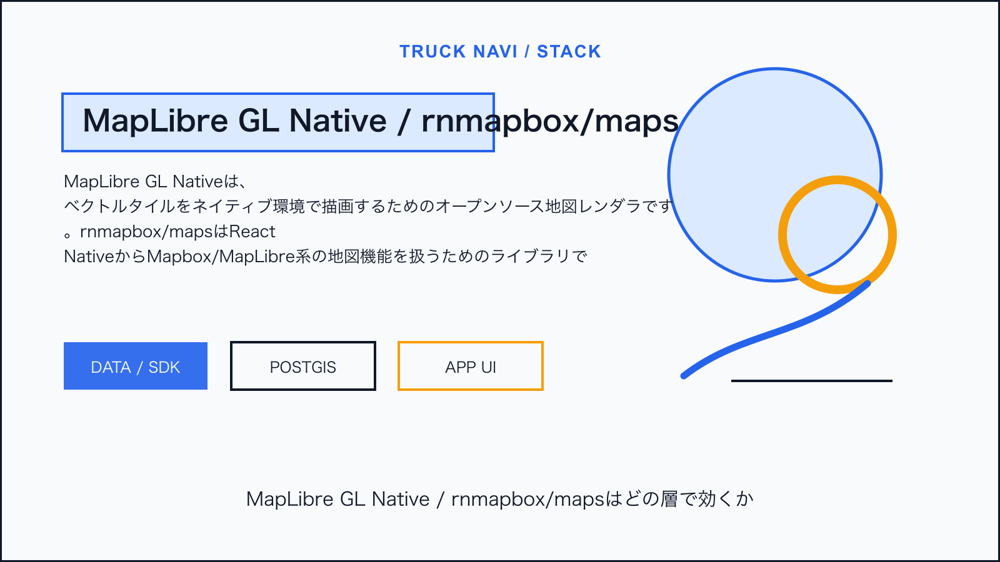
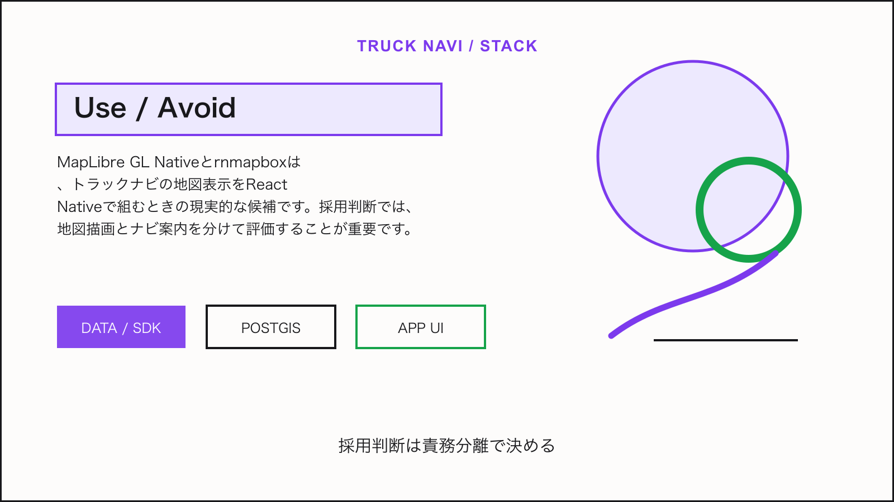

Tech Stack / Truck Navi
MapLibre GL Nativeとrnmapboxをモバイル地図SDK候補として見る

この技術は何か
MapLibre GL Nativeは、ベクトルタイルをネイティブ環境で描画するためのオープンソース地図レンダラです。rnmapbox/mapsはReact NativeからMapbox/MapLibre系の地図機能を扱うためのライブラリで、トラックナビのクロスプラットフォーム地図UI候補になります。
NERV防災のライセンス情報から見える利用形態: MapLibre GL Native BSD 2-Clause、react-native-mapbox-gl / rnmapbox license。
トラックナビで使えそうな理由
React Nativeでトラックナビを作るなら、地図表示、カメラ制御、ライン、シンボル、独自レイヤーの実装候補になります。ただし、音声案内、オフルート判定、ルート再計算まで含むナビSDKの代替にはなりません。
アーキテクチャ上の置き場所
アプリはReact Native、地図表示はrnmapbox/maps、タイル描画はMapLibre/Mapbox系、独自データはAPIからGeoJSONまたはベクトルタイルで渡します。経路探索は外部Navigation APIまたは自社バックエンドへ分離します。
Mobile App / Admin UI
↓
Truck Navi API
↓
PostGIS / business data
↓
Map, tile, weather, or device layer採用時の注意点
- 商用Mapbox SDK/APIとの利用条件を混同しない
- ナビゲーション機能は描画SDKだけで完結しない
- Android/iOSのネイティブ依存とバージョン追従を保守計画に入れる
結論
MapLibre GL Nativeとrnmapboxは、トラックナビの地図表示をReact Nativeで組むときの現実的な候補です。採用判断では、地図描画とナビ案内を分けて評価することが重要です。

Sources
この技術を使っていると表明しているサービス
- NERV防災は、提示されたライセンス情報上でMapLibre GL Nativeとreact-native-mapbox-glを利用していると表明している。